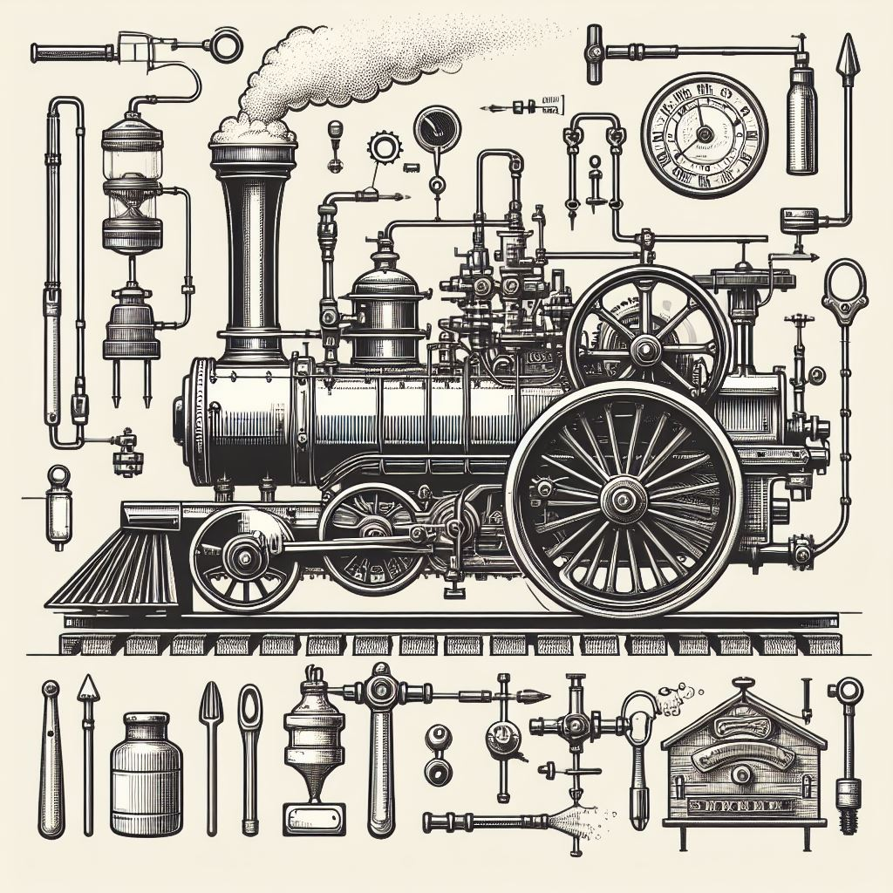

We Are Network Support
Given we are all equal in rights, what is wrong
for one is wrong for all. This basic truth applied
consistently results in a world where all goods,
services, associations, institutions,
interactions, etc. are voluntary.
This website serves as a guide for the
establishment of the basic infrastructure
necessary to create and maintain this voluntary
world of tomorrow.
Some view morality as a dangerous and subjective
endeavor. But not all moral frameworks are equal.
The moral philosophy of Voluntaryism is simple and
unpresumtuous.
Voluntaryism, at its core, is a philosophy
centered on the fundamental principle that all
human interßaction should be consensual and
non-coercive. Unlike many traditional frameworks
that delineate a broad spectrum of "right" and
"wrong" actions or thoughts, Voluntaryism uniquely
focuses its evaluative lens almost exclusively on
the initiation of force or fraud. It does not
proscribe personal choices, lifestyles, or
beliefs, no matter how unconventional, so long as
they do not infringe upon the equal freedom of
others. In essence, Voluntaryism's primary concern
is not to dictate virtue or personal conduct, but
rather to establish a clear boundary against
actions that forcibly diminish another
individual's autonomy.
A moral principle or code must be universally
applicable and unchanging. That said, many large
institutions of this world seek to obfuscate and
seduce us into accepting that some human beings
get to act as if they have rights they do not.
Because we have allowed our world to get to the
current state of human emergency, a solution must
be pioneered out of a life of subjugation through
compulsory taxes and compulsory regulation.
Most are convinced that the rules of the game we
call our current society are immutable. They
believe that even if there are unjust laws, the
only option is to obey and self-enforce those
laws. This way of thinking is based in fear of the
repercussions of acting outside of the boundaries
of our current system. This fear is understandable
when there is not a well-known tradition and
pathway towards living a life unfettered by unjust
laws.
You own yourself and have the right to choose who
you will and will not associate with, pay tribute
to, or be subject to. This simple understanding
constitutes the framework from which we have built
our moral code of conduct. You cannot delegate
rights you don't have. No individual nor group of
individuals can decide for another person what
they consent to. You do not have the right to
enslave, rob, or murder another individual, but in
this society, many pretend to delegate these
"rights" none of us possess to individuals called
"elected officials" and their enforcers called
"police" and their monopolized injustice system.
Acknowledging these facts can cause complex
emotions regarding the current state of the world.
Unlike what we are led to believe, we are not
powerless to change this world and our lives for
the better. We choose to rally around a common
cause as opposed to a common enemy. Freedom, to
us, is not only about not being bound by the
current monstrous systems. Freedom is also
measured by the ability to conduct your
consensual, voluntary affairs as you see fit
without repercussions.
On an individual level, our lifestyle allows us to
remove ourselves from many of the unnecessary
taxes and regulations on our lives that most
people suffer from, and our goal is to pioneer,
provision access to, and foster a parallel
network, a way of life, and counter-economy of
morally-conscious individuals.
There are still countless voluntary paths and
professions that are blocked by the current
system. It should be easy and available for anyone
to enter into a profession they desire, or to
create an entirely new profession for themselves
without unnecessary bloated restrictions, allowing
for the free market to deliver goods and services
based on consumer desires. There is a way forward,
and we are the ones to create it.
There is a perception held by some that there is
little opportunity for those who desire autonomy
and freedom. And this is both true and not true.
Currently, many things are in the way of people
doing what they would do otherwise.
There are laws that restrict these things, and
people’s fears are valid. We don’t
need people to be breaking the law on their own.
We need to make safer decisions.
The main thing that we are not seeing in the
literature available today is many people talking
about the power that we have right now as a group
of millions of individuals or even hundreds of
thousands who understand what needs to be done and
how easy it will be to free the rest of the world
from slavery by government.
We see the possibility that comes with each
person. There is so much more possibility for each
person who understands the network, but when you
add certain constraints, you can yield very potent
results. Those who want to participate in these
constraints are considered to be part of the
‘engine’. For those outside of the
engine, there is much more we can connect on
(human sovereignty) than what divides us.
Institutions that initiate or threaten to initiate
force against the person or property of others
have no right to exist. Therefore, the
authority-based power structures that call
themselves “The State” have no right
to exist. (they should not exist and are not
necessary for any positive paradigm shifts from
now on) //
These institutions would have never gained power
if not for murder, lies, and deception. The only
strategy they utilize to solve problems is the use
and threat of violence. There is no argument for
authority that makes sense because we are all
equal in rights and none can possess extra rights
to do things that are wrong for others to do.
//For something to be a moral principle, it must
be universally applicable. This is the universal
ethic axiom, otherwise it’s not really an
ethic. It is always wrong to initiate or threaten
to initiate force against the person or property
of other peaceful people.
Countless people throughout the world are
committed to attaining higher levels of freedom
for themselves, and many are also passionate about
the freedom of others. We already have the
infrastructure necessary to sustain freedom for
more and more people right now. The thing that has
been lacking in other plans we see is a simple and
wide-scale solution. The clear, ideologically
simple idea of freedom for all people without
adherence to one system or another. The means to
transition from a state of surviving to one of
thriving. The Network is here to bring the
coordination necessary to completely defund the
systems we do not consent to.
There is a lack of discussion on the specifics of
how voluntaryism can lead from this state to the
next state within our lifetime.
It is good to speak of the unknown nature of the
polycentric outcomes that will take place in a
free society. However, this does not mean there
will not be some specific events that lead towards
the adoption of this new world.
There are enough voluntaryists already that if
they all did something cohesively, the example
they made would become visible to the larger
public.
Then it is the actual free nature of voluntaryism
itself that would enable many more people to
become aware of the efficacy of this way of
living.
We need to imagine a feasible transition from the
state we are in now to a new state. Not having
this vision is a huge reason why people become
inactive or disillusioned within their current
communities.
People fall victim to the mentality that certain
things aren’t ‘realistic’ or
practical and that certain outcomes are virtually
impossible in our lifetimes. The only time change
is not possible is if enough people continue to
believe it is not possible and choose to do
nothing.
The high-level overview of our plan goes like
this:
-
Those who already know about voluntaryism
are all we need to make this happen. They
redirect all of their resources of labor and
thought to the free world, with a purely
agorist marketplace and protected living
spaces where all interactions exist free of
the state.
-
The marketplace flourishes and people from
the cities start coming to our marketplaces
and our events and learning about the real
applications of voluntaryism and how to
create, find, or access their local network
of protected free markets.
-
Slowly the state loses its grasp on our
hearts, minds, and resources and we
transition fully into the new realm.
This is how a nomadic caravan will look:
-
One or more full time traveling caravans are
formed.
-
A caravan sets up a pop-up agorist
marketplace on the outskirts of a city for
approximately one month at a time.
-
People from the caravan enter the city and
spread the word through a variety of
networking and advertising techniques about
the alternate marketplace and offer
opportunities for alternative ways of
living. This is not unlike setting up camp
on the outskirts of an enemy-occupied and
controlled city, town, or village you wish
to wage economic war with.
-
The caravan leaves behind a full-time group
committed to holding marketplaces and
helping those in the city transition into a
full-time agorist lifestyle.
CaravAnarchy
An example of a nomadic agorist caravan is
Camp CaravAnarchy, a traveling nomadic agorist caravan that
focuses on making business and social networks
with people seeking to bring about a more free
way of living for themselves and others.
Chew’s Wisely Ice Cream and Pizza
Our
“Ice Cream Philosophy”
is that we strive to bring to market the
finest quality Homemade Ice Cream products,
sourcing ingredients from as many agorist
sources as possible, sourcing only the highest
quality ingredients. If you want access
to the best Ice Cream this reality has to
offer, you have to go through the agorist
market.
We are creating a perpetual free market that will
provide a safe space for people to buy and sell
agorist goods without fear of the government. We
travel from town to town, setting up in BLM land,
staying for a month or more at a time, and from
time to time venturing to private campgrounds for
freedom-respecting festivals.
We don’t need to convince more people that this
way of living is viable. There are already enough
people who have seen the vision of how a free and
voluntary society would work - if every one of
them started living their life in this new way, we
would make a big enough impact to gain the
attention of the rest of the world. This is not
another intentional community. This is a strategy
towards creating freedom for all that can be
adopted by every person immediately. There is no
central location or leader that can be taken down.
Like an idea, it can only spread.

We do not need to escape this world. We have
everything we need here to create the next phase
of existence. This is the world that, in time,
becomes the ideal world for each individual. How
can each person have their own ideal coexisting
with every other person’s ideal,
simultaneously? The answer is voluntary pluralism.
To get a more concise and potent result, we are
more concise with our parameters. We are not
judging those who do not follow these parameters,
but we are making a distinction within our own
decisions to do business with others who are
actively creating more freedom for others instead
of creating only a space for themselves to
temporarily reduce their own oppression while
doing little to manifest or support protected free
markets.
We do not want to spend our lives working for
other people’s goals while doing nothing or
very little toward what we are in this realm to
achieve, which has nothing to do with slaving away
for money.
This is a guide to the establishment of a society
that is independent, interconnected, and free from
coercion. Today, we have everything we need to
circumvent the state entirely. Communities small
and large are already flourishing all around the
world, and what is lacking in the common lore is a
larger and more liberating story we can all
manifest into reality.
The next sections will address the following:
- People don’t see an option
- We are creating an option
- You can create an option
Understanding what is possible will lead to a more
extensive awareness and empowered utilization of
these communities, both with each other and by
those still more entrenched in the slave society.

The worst evil is people still believing and
perpetuating the lie that their neighbors must
be controlled by the government. No individual
or group of individuals can possess authority,
or “the right to rule”, over others. You own
your self and 100% of the fruits of your time
and labor, which can be thought of as an
extension of yourself on this planet.
Our plan is to provide people with options to
transfer their work and living situations into a
new realm or state of existence where they are not
bound by government systems of control.
Your way of living should be an act of rebellion
that helps make people’s choice for freedom a
no-brainer.
We have a method to support and bolster the supply
of goods and services by providing an ever-growing
supply and demand for these resources. This is
accomplished through intentional networking and
establishing trade relationships and contracts
with individuals who share our aim of bringing
about the best of all possible worlds by making
the world more free for others. We also aim to
minimize if not eliminate altogether the number of
fiscal transactions we engage in with unknown or
unvetted individuals, especially those who haven’t
demonstrated a desire to be free from the taxes
and regulations imposed on them by the State.
There are many ways in which this plan is unique
to any we have seen so far. The unique attributes
of our plan provide a strength and resilience that
helps it transcend the pitfalls of other
initiatives and businesses. Unlike a proposal that
requires massive funding to get off the ground, we
already have much of the infrastructure needed in
place. All that is needed is to transition
businesses that are funding the tax system into
the new, free realm. There are no extra start up
costs to create a business in the network - no
fancy degrees or licenses are needed. Vending,
selling, trading, and providing your good or
service is free of compulsory licensure or fees.
This initiative is aimed at people who are already
trying to make a living and who already have
resources invested in themselves and could benefit
from shifting their business towards a tax-free
network that will provide them with opportunities
for growth, a greater sense of purpose and
connection with their customers, and lasting
prosperity.
What we are describing is a lifestyle and
resource-allocation strategy. The more people are
empowered by these strategies, the stronger they
become and the more everyone involved benefits.
The success of the network is not tied to any
individual’s success. We (Caravanarchy) identify
as “network support”. Others can replace our role
should some tragedy befall our specific wing of
support.
Success looks like a network that can provide
people with what they need to make their lives
better in the absence of compulsory fees or
restrictions getting between suppliers and
customers. This results in alternate income
streams, careers, training, and education. A
multitude of options of superior value become
available from this strategy when it comes to
food, supplies, and services. Alternate
healthcare, insurance, arbitration as well as
alternate entertainment venues and community
meeting spaces become available to more
individuals as the network grows.
We are creating this guidebook and an online
presence that will do much more to help those
specific individuals who want to make a change and
commit to these endeavors in a way that makes a
difference. Join us in creating a world immune
from institutionalized tyranny!

Igniting the Engine
Our model does not require capital to run. It is a
framework that can be applied to help others
better utilize their time and resources toward
safeguarding freedom. What we need is not
donations but people on the ground, explaining
what is possible and available to us right now and
also creating the next level of possibilities.
This network will help those seeking protected
free markets to transition from a state of
surviving to one of thriving.
Eventually, the network will provide a place for
everyone. This is a path away from everything
unsatisfactory about their current way of living.
Whether they want to learn a trade in an Guild,
start their own Guild or profession, or just live
free on land arbitrated by no ruler, there are
countless reasons why choosing freedom for
yourself is an obvious and beneficial path. Life
can be easier, more profitable and there is more
time in the day when the fruits of your productive
energy aren’t being siphoned away into the
wasteful and unethical games of politicians and
well-meaning voters. Similarly, there is more
incentive to work when you know your labor is
going towards something that will support you more
and more as time goes on. We will share more on
that in the next chapter.
We are not creating the network. The network
exists already, though small. The full potential
of the network will manifest when it is given the
right push and intention. Instead, you can see us
as network support. We are devoting our entire
lives and livelihoods to creating a stronger bond
between those who are already constituting the
network and encouraging a larger vision for how we
can take on the needs of our dispersed
freedom-supporting community members and markets
in every way.
A peaceful society is possible based on a truly
simple concept: that no man should aggress upon
another or their property as an extension of their
existence in this realm. All Guilds between
individuals or groups must be voluntary and
consensual. No person or group of persons should
be given the freedom to aggress. Justice comes
from restitution, so victims must be free to exact
restitution from their aggressor(s). Individuals
who are the targets of aggression should not be
prevented from the exercise of defensive force in
opposition. We recognize this as the
Non-Aggression Principle (NAP) paired with the
Self-Defense Principle (SDP) and the Principle of
Restitution (PoR). We can pave the way for an
organic and voluntary society based on these
precepts alone, but to do that requires more than
just encouraging each person to spread a culture
of voluntaryism in their current immediate
surroundings. Even small communities of
voluntaryists can not create a voluntaryist
society in the larger world unless they share a
larger vision for freedom beyond their own domain
and take action to join and help create the
network of protected free markets.
When you make your voluntary groupings, make sure
to look at what is created. Are you producing more
freedom for others beyond your circle? This is not
an altruistic approach but promotes a realistic
understanding of how each smaller group relies
upon an interconnected network in order to
survive. Not only does every group interact with
the larger society in some large or small ways
that affect their life and well-being outside of
their control, but any one group cannot get all of
their needs met by their individual members. You
need to import products and services. To do this,
you must expand your inner network to collaborate
with others in your broader community who share in
your desire to create safe and thriving free
markets and establish protected and trusted trade
and social networks.
We also understand that the stress of high
mortgages and “taxes” (government
extortion) makes wealth accumulation more
difficult and that is why we are creating the
infrastructure (the bounty board, helping to meet
the needs of our network of individuals intent on
protecting and supporting a free way of life) to
create affordable housing and jobs that pay more
while not extorting taxes from the people
involved. Nobody will be turned away for lack of
funds. Instead, we will select our allegiances
based on the goal and vision of each individual.
Every organization or organism has parameters it
is working to achieve and maintain. Another
similarity between these two is that like an
organism, the way an organization is formed and
the mechanisms that bring it to life will
determine the outcome it achieves in its
environment.
This is why we have the engine. We are creating a
bulletproof mechanism and strategy, so that even
if large parts of it are destroyed, all it needs
is one hearth, aka one wing of the network, to
light up in some distant land and our engine is
going again.

We do not need any one leg of the engine to
survive continuously for the engine to roll on.
Any single hearth can turn its engine on and off,
but there will always be more engines firing and
producing the change we need to move past the
current binds we live under and into a realm of
voluntaryism for all.
When we create certain additional criteria for our
interactions in addition to the NAP (which already
underlies all of our interactions) we assure that
our interactions will make the largest impact
possible in the community that supports us.
We need a community to support us in these ways:
security, backups, community, etc. The everyday
society we have come to know is not providing for
us in the ways we need, and we are being led to
erroneously think ourselves powerless over our
current state of mass-human-enslavement.
Having a protected community requires vigilance,
decentralization, sound principles, and a
plurality of voluntary strategies aimed at meeting
needs.
We are not the network itself, nor does it need
us as individuals to materialize it. However,
our caravan fills an important role.
A majority of the people we meet are interested in
settling down on property and growing their own
food. The logic in this endeavor is infinitely
sound. However, one of the biggest struggles for
farmers who have the desire to progress beyond
their own sustenance and to make money doing what
they love is finding the market for the goods and
services they wish to provide - both outside and
inside their farmstead.
Farming and producing goods are very desirable
endeavors as opposed to making money from
something unrelated to your efforts to exist in a
healthy and positive way. It is hard to find new
customers when farms are often hours from major
cities, and the money they would have to spend on
gas to drive and sell their goods can cut a
sizable chunk out of their profits, not to mention
taking time away from the tasks they must complete
to keep the farm running.
As full-time nomads, the money we spend on gas is
already subsidized by the sheer amount of goods we
are bringing from one place to another. We make
sure that every time we move, we are making money
simply by moving: for example, we provide
rideshare and package delivery to supplement our
travels if there is a questionable business
opportunity on the other end.
Do you believe in a society where all
interactions are voluntary and
consensual?
This website presents a path for every person
towards a life that is more aligned with the
expression of their true potential and desires.
This website also serves as an introduction to a
network that already exists in its formative
levels and aims to soon provide clean,
freedom-oriented alternatives for every need a
person may have.
This website is to help you figure out your next
move. It is full of plans of action and resources
for collaboration. In every section, strategies
are provided that can be used to meet most needs.
The bounty board and social boards connect
individuals with available resources. Without the
leeching and constraint of the state, everyone can
live a free and fulfilling life they can be proud
of. This requires discipline, intention, and a
willingness to adapt one's lifestyle toward
bringing about a more free world for themselves
and others. It will also require our continued
vigilance in keeping our markets safe from
aggressors.
We are cultivating a world of decentralized and
interconnected voluntary relationships between
equals; because that is the only possible just
future. There is no free world in which force or
coercion can persist unchecked,
much less become institutionalized.
Because of the concise nature of our plan, the
outcome of this is going to be something more
abundant than seems possible in these bleak times.
Those who participate will enjoy the bounty
once-stolen from them by the State, while enjoying
a market constantly on the lookout for aggressors.
They will enjoy a higher standard of living not
only concerning material wealth, but also in that
of social wealth and resilience gained through
intentional networking. Participation can be done
on many levels, both overtly and covertly.
Part of our work is to make leaving the old
and destructive ways smart, easy, fun, and
cool.
In the current paradigm, we haven’t been
able to take a positive approach because, with the
options given, there are no viable paths forward
in which we are still maintaining our morals.
Because most problems arise from the systemic
problems associated with government control, we
have an answer or better way of framing for all
questions and issues brought up by the past and
current society.
You do not need to leave the city to become an
agorist. The goal is to disconnect your income,
housing, and expenditures from the beast. The
Network aims to provide you with truly free-market
alternatives to the taxed and regulated markets.
When you are clear with your boundaries and
vision, you can create an intentional network that
will free humanity forever. With your intention in
mind, cultivate the network links that lead you
toward your goal rather than relying on organic
growth alone. It is about changing who you support
- and offering incentives for people to change
with whom they do business with.
We need to get the word out and not bend to fear!
We can create the future we want, right now!
Other Goals:
-
To bring a purely agorist way of living to
people both stationary and nomadic.
-
To provide levels of involvement so that
people can exit the system on their own
timeline.
-
To provide an example of a functioning agorist
business
-
To use our example to help people who want to
introduce others to Voluntaryism and Agorism
-
To offer excitement and perspective with our
real-world RPG concept
-
To connect people to resources and info in the
alternate trading economy
-
To bolster supply and demand, enabling others
to exit the system more quickly
We support people in translating their lifestyle
away from the tax system and into the network. In
order to fully detach, you must reclaim your
income, housing, business and expenditures. There
are many resources on this site to help you
transition into a new life. You can start
here
or keep reading to get the full picture.
If you are not ready to transition in one or more
of these areas, you can still spread freedom where
you are by employing the following strategies.
This also applies to individuals who do not want
to leave their current area but still wants to
grow the network around them.
Freedom Through Goods and Services
If you want to spread freedom in your area,
start by identifying a need people have for a
good or service and find someone who is
willing to meet that need. Work with that
person to create a model where they are able
to produce a good or provide a service at a
cost and value that is comparable to the
market rate but without funding or complying
with the state in any way.
Freedom Through Housing
Find ways of circumventing the state through
providing tax-free shelter for those who are
also actively trying to create and grow the
network. The easiest way to do this is to
create a caravan outside of a city or town
where the caravan members support each other
in taking advantage of the amenities of the
city or town. Members can earn income remotely
or through interactions with the people of the
town.
You can also create an
inner-city
or
outer-city outpost
to support visiting caravans and provide a way
out for people still stuck in the system.
A third option would be to become a
Network Host
and help those trying to gain a new position
in the network.
Grow Your Network
The most effective way to grow your network is
to find people both local and remote to
collaborate with on creating new offerings in
the network.
To find these contacts, you can search within
the network via the options on this page:
To source new contacts in your area, spread
word of the network with those you meet.
Identify others who are looking for ways to be
more free. This includes both friends in
freedom and trusted individuals who are both
trade and social contacts.
You can also create meetups and marketspaces
to discuss options, form and execute plans,
and conduct trade with those who attend. If
nomadic, such spaces should be created when
possible, or you can locate a preexisting
space near you to make contact and trade with
others in the network. If stationary, the aim
is to have a regular network meeting and
market space available near you.

Keeping the Money in the Network
If you want to trade or give, put your resources
into people who will make us all more free. When
you provide goods or services to others, what does
your energy and time result in? Does it go into a
network whose growth directly helps and protects
you, or do your efforts end up funding the state
down the line?
To answer the above question, it is imperative
that you consider your business contacts and
customer base. When those you work and do business
with go back into their lives, are they using the
energy produced by your trade to create more
freedom for others? Or are they spending their
time working within the confines of the State,
bleeding their energy into its evil machinery
through their income, housing and other
interactions?
When choosing who to sell to or buy from, ask
yourself:
"Who is going to be a targeted missile
directed towards what I would like to
achieve?"
It makes more sense to provide goods and services
to people who are keeping their energy inside the
network so that the wealth and prosperity we all
share can be multiplied instead of pilfered away
into the enemy’s reserves.
When we work within the private realm and don’t
spend our resources on government licenses and
taxes, there are more resources concentrated
within the Network of freedom-bringers. This
brings the price for Network goods down, making
them more accessible and allows them a competitive
advantage over the Matrix market. Networks can
provide these high-value goods and services to
those still stuck in the Matrix, introducing them
to the abundance of the Network without requiring
them to understand the philosophy. This results in
stronger, larger agorist networks and market
opportunities.
Charity
Everything you do is effort and resources.
Nothing you possess has been received free
from effort.
Be discerning when you offer help to someone. It
does the most good to help people who are using
their life to achieve the greatest good, which is
making the world more free for themselves and
others.
It’s too much of a risk to spend money or give to
charity when you cannot ensure it won’t bleed back
into the State. This includes giving to
individuals who aren’t making the world more free
for others. If you give to someone without knowing
what that person is doing with their resources,
you are saying “I don’t matter. My time doesn’t
matter and my efforts are for nothing”. Money can
be thought of as a source of potential energy, and
you get to choose what that energy will support.
You only have one moment, and endless options for
where to put your time, energy and resources. If
you want to grow a network that will become
prosperous and protect your future, support those
whose actions lead towards freedom and prosperity
for all instead of towards making themselves more
comfortable within a cage.
Everyone you give to can be seen as a river of
potential. If you toss resources into a river,
throw them into one that leads to freedom for
others instead of towards apathy and inaction.
Vote with your wallet. Create the world you want
to see. It doesn’t help in our economic war
against the State to give energy or resources to
people who aren’t trying to make the world more
free for others. There are people who want a
better option and who see that there is a need to
put their money into a network that ensures the
safety of their person, property, and freedom. The
Network provides them with an option that they
desperately need. This is a network that is able
to protect their physical security and the
products of their labor in a way that is missing
in the current paradigm.
Prudent Discrimination
Discriminate against people who are working to
reduce human freedom, be it actively or
through vocal support. If you have a different
opinion than someone, look at whether their
opinion requires others to lose their freedom.
If you are not sure, ask them directly where
they draw their line between what they will or
won't allow from those who think differently
from them. Do they believe people who think
differently should be free to take different
actions and fund different initiatives, while
being free to opt out of funding things they
did not choose or support?
Discrimination does not
necessarily imply ex-communication. Rather, it
is about prioritizing interactions and
exchanges based on your own framework of
judgement. It is always better to give your
time and energey toward people who are working
to make the world more free for others, rather
than less free.